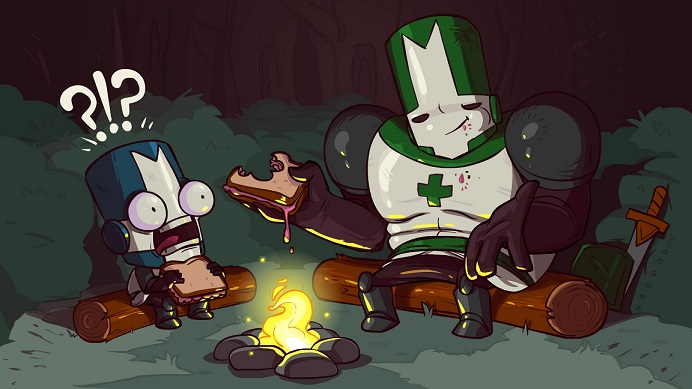
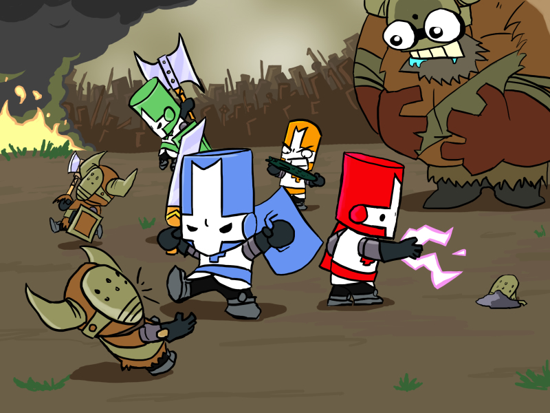
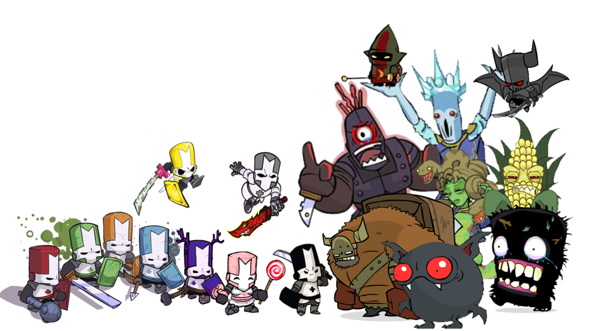

Sau 4 năm, The Behemoth đã trở lại với Castle Crashers và đã gặt được nhiều thành công khi phát hành trên Xbox Live Arcade cách đây 2 năm. Tuy nhiên với người dùng Mobile thì họ phải đợi tới tháng 8 vừa qua mới có thể thưởng thức tựa game này trên hệ thống Store. Với tất cả những ưu điểm đã có và được bổ sung vài tính năng, đây là 1 tựa game indie đáng chơi trong kho game mobile.

Nội dung của game khá đơn giản và quen thuộc khi xoay quanh cuộc giải cứu công chúa của 4 vị anh hùng. Đúng với nội dung
của game Beat ‘em up truyền thống, nhân vật chính sẽ trải qua cuộc hành trình của mình với việc đánh bại nhiều kẻ thù
và cuối mỗi phần chơi là màn đánh trùm để cứu công chúa. Đôi khi nhân vật sẽ nhận được sự giúp đỡ của các sinh vật trong
game để có thể tìm được các vũ khí mới.
Yếu tố nhập vai của game được lồng ghép khá đơn giản. Khi tiêu diệt được đối thủ, nhân vật nhận được điểm kinh nghiệm và
tăng level. Khi lên mỗi level, người chơi có thể dùng điểm thưởng level để tăng các chỉ số về sức mạnh, độ sát thương,
tốc độ hay kỹ năng bắn cung. Với việc tăng sức mạnh của các yếu tố khác nhau, nhân vật có thể học được các đòn đánh
kết hợp mới, có hiệu quả và sức mạnh cao hơn.Game có nhiều chế độ chơi thú vị để người chơi có thể khám phá. Với phần chơi theo cốt truyện, người chơi có thể chơi 1 mình hay cùng chơi với bạn bè. Chế độ chơi co-op hỗ trợ 4 người mang lại rất nhiều điều hấp dẫn và thú vị. Trong mỗi màn chơi, người chơi sẽ được sát cánh cùng với 3 người bạn của mình để vượt qua mọi thử thách và đánh gục kẻ thù. Trong quá trình chơi, nếu thanh máu của bạn đã cạn, 1 người chơi khác có thể trợ giúp bằng việc hồi máu và bạn có thể tiếp tục cuộc phiêu lưu.

Sau khi hoàn thành phần chơi chính, người chơi có thể mở khóa được chế độ chơi Insane Mode để có thể tìm kiếm thêm nhiều
thử thách khó khăn hơn trong game. Ngoài ra Castle Crashers trên hệ thống Xbox Live có kèm theo 2 mini games là Arena
và All You Can Quaff. Trên hệ thống PSN, game còn có thêm mini game Volleyball. Đồ họa của game được làm theo phong
cách hoạt hình khá độc đáo. Các con trùm có kích thước lớn và được thiết kế ấn tượng. Cảnh vật trong game rất sinh động
và đầy màu sắc, và chắc chắn đây là một yếu tố hút hồn lớn của game. : Lầu 2, tòa nhà Innovation, lô 24, Công viên phần mềm Quang Trung, P.Tân Chánh Hiệp,
Quận 12, TP. Hồ Chí Minh.
: Lầu 2, tòa nhà Innovation, lô 24, Công viên phần mềm Quang Trung, P.Tân Chánh Hiệp,
Quận 12, TP. Hồ Chí Minh. : 01682087435
: 01682087435 : long.phamlp94@gmail.com
: long.phamlp94@gmail.com